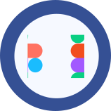
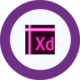

Sobre mim
Uma designer que adora ouvir novas histórias e aprender com elas. Busco sempre pensar de forma analítica, gosto de explorar novos caminhos e metodologias e acredito que não vamos a lugar nenhum sozinhos.
Projetos e publicações

Habilidades e formação
Há cinco anos atuo com pesquisas para a produção de conteúdo de empresas de diversos setores. Participei de um desafio de UX para dar visibilidade a uma organização do terceiro setor e ajudei a construir uma possível alternativa para promover o voto consciente no país. Ao final de 2020, finalizei cursos focados em experiência do usuário e publiquei artigos sobre o que tenho aprendido até aqui.
Educação
2021 | Desk Research: como fazer e entregar um bom trabalho |
2020 | Experiência do usuário |
2020 | UX Research: entrevistas com equipes internas |
2020 | UX Strategy: divergindo e afunilando ideias |
2020 | O que é experiência do Usuário? |
2017 | Graduação em jornalismo |
Softwares
Figma
Avançado
Xd
Intermediário
Photoshop
Básico